This guide explains every screen, button and setting in Project Opener, the in-house tool
Dexterity Design Services uses to open everything a job needs (isometrics, line lists, working folders,
submission shares, links, applications) with one click, to share those bundles over the office LAN, and to
keep every PC on the same version. Each section shows a screenshot of the option and explains what it does.
It is written for all DDSP staff who have Project Opener installed.
Document control
Document No.
DDSP-IT-POP-UG-001
Revision
0 (first issue)
Date
01-Nov-2026
Applies to
Project Opener version 3.2.0 for Windows 10 / 11
Issued by
Office of the Managing Director
Approved by
Fredrick, Managing Director
Classification
Internal use only. Do not share outside DDSP.
Contents
1Introduction
2Installation and first start
3The window at a glance
4Home
5Projects
6Creating and editing a project
7Items: files, folders, links, applications and commands
8Launch sets
9Opening a project
10Path health and portable paths
11The command palette
12Team Hub
13Updates
14Settings
15Your data, backups, export and import
16Keyboard shortcuts
17Troubleshooting and support
Conventions used in this guide
Ctrl + K means: hold Ctrl and press K. Words in bold are names of buttons, menus or settings
exactly as they appear in Project Opener. Z:\Project\P12513 is a path as you would type it.
The screenshots show sample data (job P12513, the ANTEO and Mangala projects, colleagues Yokesh, Priya and Ravi).
Your screens will show your own work. Screenshots are of the light theme; the dark theme has the same layout.
Policy. Project Opener is an internal DDSP tool. It never changes the files it opens, and deleting a project
inside it never deletes anything on disk. Keep the Team Hub folder on the office server; do not copy hub files to
personal devices.
1 Introduction
Every job at Dexterity touches a dozen places: the isometrics on Z:, the submission share on
W:, the line list, the client portal, Navisworks, a Teams channel. Project Opener keeps all of them together
as one project and opens the lot with one click.
Job
What Project Opener does
Open
Opens every file, folder, link, application and command a job needs, in one go, in the order you set. Named launch sets (for example Checking or Submission pack) open a chosen subset.
Check
Tests every path in the background and tells you before you click which ones are missing, which server is offline, and which variable is not set on this PC.
Share
Turns any shared folder into a Team Hub: see who is online, publish projects for the team, clone them, send one straight to a colleague's inbox, post announcements. No server and no database.
Stay current
Updates itself from the office LAN first, then from GitHub, with a checksum check and a silent install. One admin mirrors an update and the whole office gets it offline.
How a project fits together
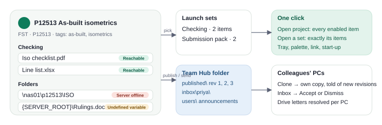
Fig. 1-1 A project bundles items; launch sets pick subsets; the Team Hub carries projects between PCs
Project
One job. It has a name, client and job number, a colour and icon, tags, a description, free notes, its items and its launch sets.
Item
One thing to open: a file, a folder, a link, an application (with arguments) or a command line. Each item has an on/off switch, an optional friendly label and a group.
Launch set
A named subset of a project's items that opens together, regardless of the items' switches.
Team Hub
A shared folder on the office network where Project Opener writes small files for presence, published projects, inboxes, announcements and update mirrors.
System requirements
Windows 10 or Windows 11, 64-bit. The dark title bar needs Windows 10 version 1809 or later.
About 120 MB of disk space. The program installs for your Windows user, so no administrator rights are needed.
For the Team Hub: read and write access to one folder on a shared drive. For GitHub update checks: internet access (optional; the LAN mirror works without it).
Double-click it and click Install. It installs into %LOCALAPPDATA%\Programs\Project Opener for your Windows user only.
Leave Start Project Opener when I sign in to Windows (minimised to the tray) unticked unless you want it running from sign-in; you can change this later in Settings.
Project Opener starts at the end of the installation. A Start-menu shortcut is added, and projectopener:// links open in it.
If Windows shows "Windows protected your PC" (SmartScreen), click More info → Run anyway. This appears because the
installer is an internal build. Download the installer only from the hub folder or the official page above.
A portable zip is published with every release as well. Unzip it anywhere and run ProjectOpener.exe; it keeps its data in the same
per-user folder as the installed version, so you can switch between the two.
2.2 First start
On a fresh PC the window opens on Home with an empty workspace, and a welcome message suggests connecting a Team Hub folder.
Three things are worth doing in the first minute (Fig. 2-1 shows the empty Home):
Settings → You: enter your display name and role (for example Piping designer). Colleagues see these on the Team Hub.
Settings → Team Hub: paste the office hub path (ask your admin; it looks like \\nas01\Project\_ProjectOpenerHub) and click Connect.
Settings → Path variables → Add my mapped drives: this records that, on your PC, Z: means \\nas01\Project, so projects shared by colleagues open here even if their drive letters differ (section 10).
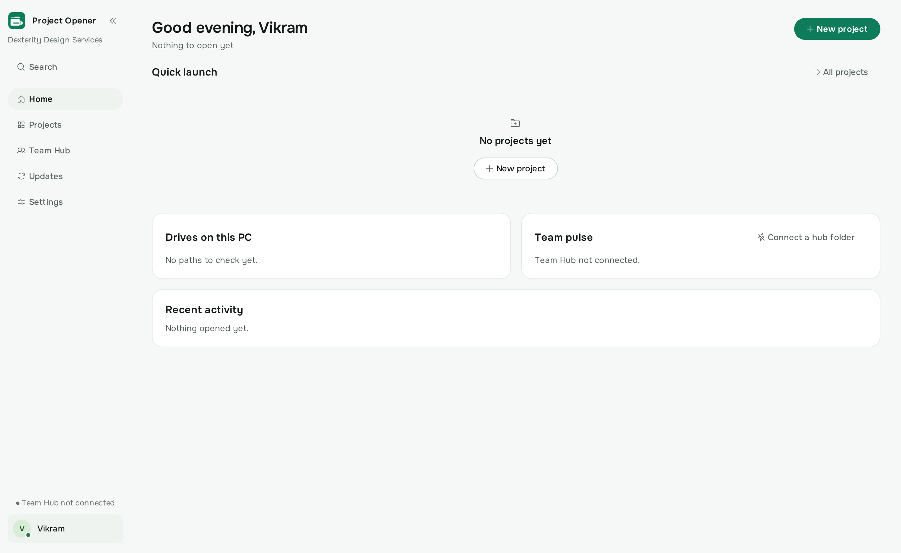
Fig. 2-1 First start: an empty Home with the welcome message
2.3 Coming from Project Opener 1.x or 2.x
1.x: your projects are imported automatically the first time version 3 starts, if it finds %APPDATA%\ProjectOpener\projects.json. A message says how many came across. The 1.x files are not changed. You can repeat this later from Settings → Data and backups → Import from Project Opener 1.x.
2.x: use Settings → Data and backups → Import… and choose your 2.x hub file (<user>.json). Each 2.x activity becomes a group of items and a launch set with the same name.
Tip. Updates never touch your projects or settings. They live in %APPDATA%\DexterityDesign\ProjectOpener\, with 30 automatic backups (section 15).
3 The window at a glance
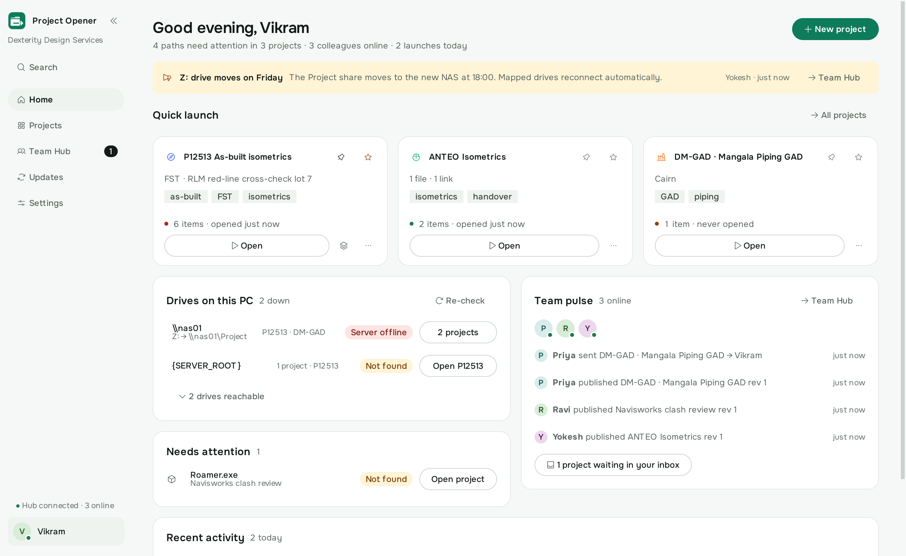
Fig. 3-1 The main window, Home page
Area
Purpose
Sidebar (left)
Search (Ctrl + K) and the five pages: Home, Projects, Team Hub (with a badge when something is in your inbox), Updates, Settings. At the bottom: the hub status (Team Hub not connected, Hub connected · N online, Hub unreachable) and your name; click your name to open the You settings. The arrow at the top collapses the sidebar to icons (Ctrl + B).
Page
The current page. The project detail page (section 7) is reached from a project; it is not in the sidebar.
Toasts (bottom right)
Short messages: what opened, what failed, who sent you a project, an update is available. Some carry one button (Open project, Open Updates, Open inbox). They disappear by themselves. While the window is hidden, they appear as Windows notifications instead.
3.1 The notification-area (tray) icon
Project Opener keeps running in the Windows notification area so a launch is always one click away.
Click the icon to show the window. Right-click for the menu.
Show Project Opener restores the window. Search… (Ctrl+K) shows it with the command palette open.
Up to ten projects are listed, pinned first, then the most recently opened; clicking one opens all its enabled items without showing the window.
Quit really closes the program and signs you off the Team Hub.
Closing the window with the × only hides it (the first time, a balloon says so). Change this with Settings → Behaviour → Keep running in the tray on close.
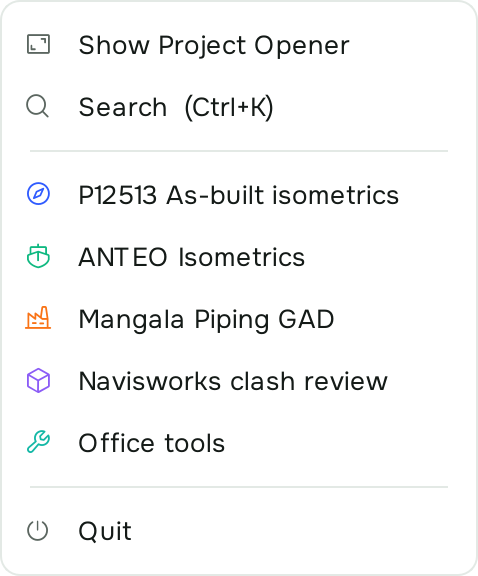
Fig. 3-2 Tray menu
3.2 Keyboard
Everything is reachable by keyboard. Ctrl + K opens the command palette (section 11); Ctrl + 1 to 3 and Ctrl + , switch pages; Alt + ← goes back; F5 re-checks every path. Section 16 lists all of them.
4 Home
Home answers one question: which job do I open now, and is anything wrong with it?
Fig. 4-1 Home
Panel
What it shows and does
Greeting
Good morning / afternoon / evening, <your name>, and below it the finding line: 2 paths need attention in 2 projects · 3 colleagues online · 2 launches today, or Every linked path is reachable.
Announcement
The newest current Team Hub announcement as one band (blue = information, amber = warning, red = critical), with its author and when it was posted; +N more and Team Hub open the Announcements tab. It disappears when it expires or its author removes it.
Quick launch
One row of project cards: pinned projects first, then the ones you opened most recently; All projects goes to the full list. The cards are the same as on the Projects page (section 5.2): Open opens the project, the card itself opens its detail page.
Drives on this PC
Every root your projects use (Z:, D:, \\nas01, {SERVER_ROOT}), one row each with its pill and how many projects use it, worst first; the heading counts how many are down. This is the first place to look when several projects go amber at once: one offline server explains them all. Re-check tests every path again (F5); Review opens the first project that uses that root.
Needs attention
The individual items that are not explained by a drive being down: a file that was moved or renamed on a drive that is otherwise fine. Each row shows the item, its project, its pill and Review. The panel is hidden when there is nothing unexplained.
Team pulse
How many colleagues are online, their avatars (hover an avatar for their PC, version and what they are working in), the latest team activity, and a button when projects are waiting in your inbox. Team Hub opens the hub page.
Recent activity
Your launches, with today's count in the heading: project, launch set if any, how many items opened, and when. A warning icon marks a launch where some paths were missing.
Why "needs attention" matters. Project Opener tests every path in the background (section 10). A project listed here will still open; the items it cannot reach are simply reported after the launch. Fix the path, the mapping or the variable, press F5, and the project leaves the list.
5 Projects
The Projects page lists every project in your workspace and finds the one you want in a few keystrokes.
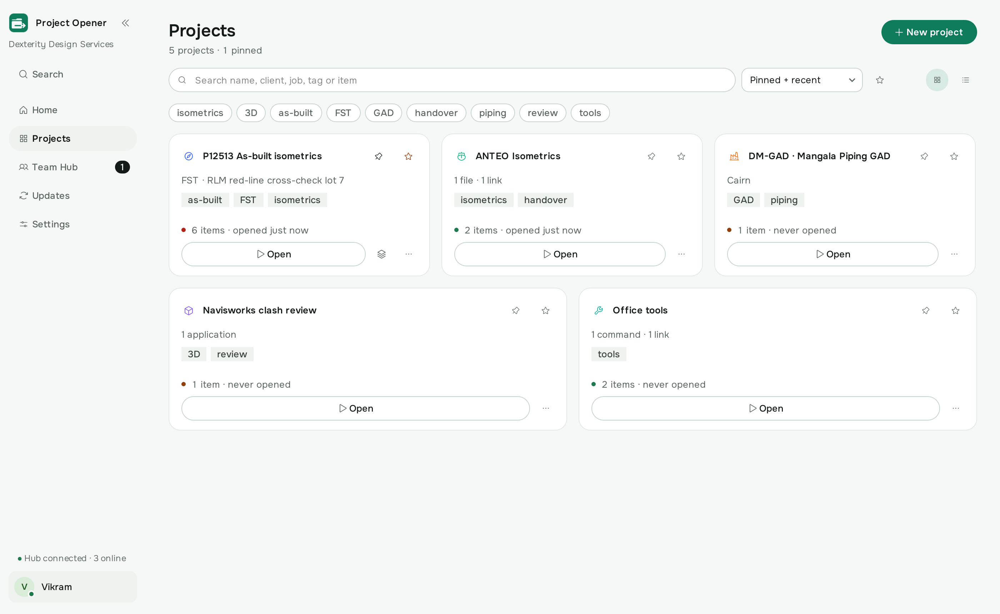
Fig. 5-1 Projects, grid view
5.1 Finding a project
Control
What it does
Search box (Ctrl + F)
Filters as you type. It matches the name, client, job number, description and tags first, then anything else in the project (notes, item names and paths, launch-set names). Spelling need not be exact: p125 iso finds P12513 As-built isometrics. While a search is active, the best matches come first and the sort order is ignored.
Sort
Pinned + recent (pinned first, then by last opened), Name, Last opened, Most used, Created. Pinned projects always stay on top. The choice is remembered.
★ Only favourites
Shows only the projects you have starred.
Grid view / List view
Cards or compact rows. The list view fits about twice as many projects on screen; the choice is remembered.
Tag chips
One chip per tag used in your workspace, most used first. Click one to show only projects with that tag; click several to require all of them; click again to clear.
The subtitle under the title counts your projects, how many are shown by the current filter, and how many are pinned.
5.2 The project card
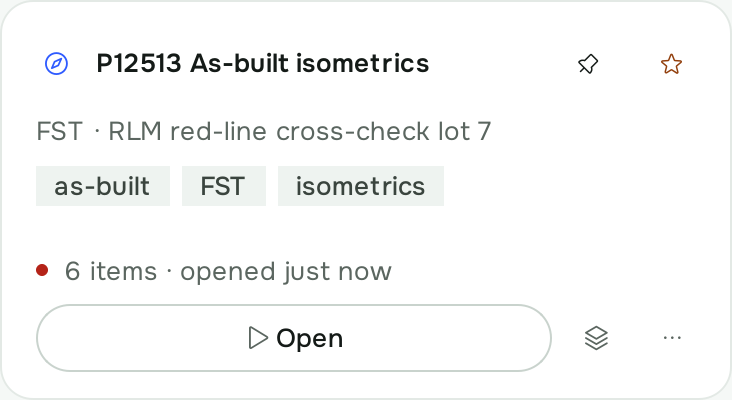
Fig. 5-2 One project card
Element
Meaning
Pin
Pinned projects sit first everywhere: here, on Home, in the palette and in the tray menu.
Star
Favourite. Used by the Only favourites filter.
Title
The job number first, then the name: P12513 · As-built isometrics. The same spine appears on rows, in the palette, on the launch sheet and on hub cards, so a job is recognised by its number everywhere.
Second line
Client and description; when both are empty, what the project holds (1 file · 1 link).
Tags
The first three, then +N.
Health line
A dot (green: all paths reachable; amber: some need attention; red: a server is offline; grey: still checking), then 6 items · opened just now, or 4 of 6 items when some are switched off, or never opened.
Open
Opens all enabled items now (section 9).
Launch sets
Shown only when the project has launch sets; pick one to open just that set.
More (⋯)
The project menu, below.
Click anywhere else on the card to open the project's detail page.
5.3 The project menu
The ⋯ button on a card, a row and the detail page opens the same menu.
Entry
What it does
Open all enabled items
Same as Open.
Open launch set ▸
Opens one launch set (only shown when the project has sets).
View details
Opens the detail page (section 7).
Edit…
Opens the project editor (section 6).
Pin to top / Unpin
Pin or unpin.
Add to favourites / Remove from favourites
Star or unstar.
Open at start-up
When ticked, the project's enabled items open every time Project Opener starts (if Settings → Behaviour → Open start-up projects is on). Useful for the job you are on this month.
Duplicate
Makes a copy named <name> (copy) with fresh counters and no pin.
Publish to Team Hub…
Section 12.3.
Send to colleague…
Section 12.4.
Export as JSON…
Saves the project as one file you can mail or keep; import it with Settings → Data and backups → Import….
Delete project
Asks for confirmation. Only the entry in Project Opener is removed; the files themselves are not touched.
5.4 Creating a project by dropping files
Drag files or folders from Explorer onto the Projects page. The project editor opens with the name taken from the first dropped item and all dropped paths already added as items. Check the name, pick a colour and click Create project.
6 Creating and editing a project
Click New project (Home or Projects; Ctrl + N anywhere) to create one, or Edit on a project to change it. Both open the same editor.
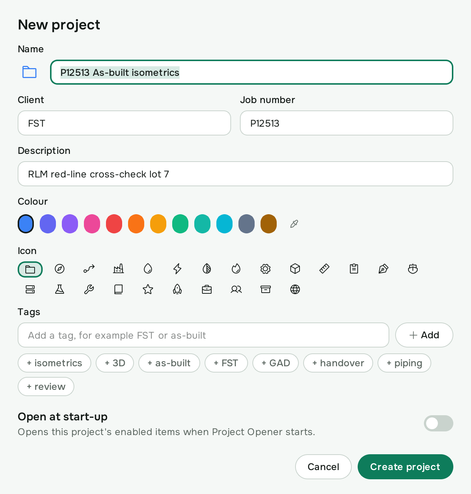
Fig. 6-1 New project
Field
Notes
Name
Required. Use the job number and the job: P12513 As-built isometrics. The icon on the left shows the colour and icon as they will appear. If the box is left empty, the dialog outlines it and says so.
Client, Job number
Both are searchable and shown under the name.
Description
One line. Shown on the card when there is no client or job, and to the team when you publish.
Colour
Twelve swatches, or the eyedropper for any colour. The colour marks the project everywhere, including the tray menu.
Icon
Twenty-four trade icons: drafting, diagram, plant, oil & gas, power, water, fire, mechanical, 3D model, QA / check, submission, marine, site, process, and so on.
Tags
Type a tag and press Enter or Add (or separate several with commas). Tags you already use elsewhere are offered as + tag chips; click one to add it. Click the × on a tag to remove it.
Open at start-up
Same as the menu entry in section 5.3.
Create project (or Save when editing; Enter does the same) closes the editor and takes you to the project's detail page, where you add its items and write its notes. A new project with a name that already exists gets (2) appended rather than being refused.
Tip. Pin, favourite and notes are not in the editor: use the pin and star on the card, or the project menu, and the Notes panel on the detail page.
7 Items: files, folders, links, applications and commands
The project detail page is where a project's items live. It answers: what is in this job, and does every path still resolve?
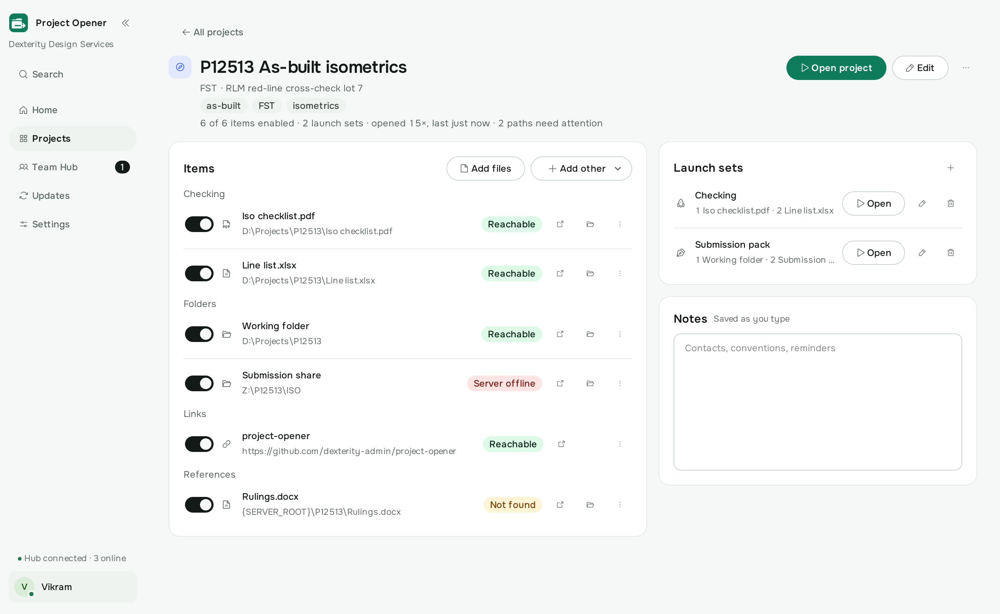
Fig. 7-1 Project detail page
7.1 The header
All projects returns to the list. The title is the job number and the name; the line under it shows the client and description, then pills for each tag and Auto-launch. The grey meta line sums the project up: 5 of 6 items enabled · 2 launch sets · Opened 14× · last 2 h ago · all paths reachable. Open project opens every enabled item; Edit opens the editor; ⋯ is the project menu (section 5.3).
A project that came from the Team Hub shows a banner here: Published by Priya · you have revision 1 · revision 2 available, with an Update from hub button (section 12.3).
7.2 Adding items
Two buttons at the top of the Items panel:
Add files: choose one or more files; they are added at once.
Add other: a menu with Folder (choose a folder), Link, Application and Command; the last three open the item dialog with the type pre-set.
You can also drag files, folders, applications or web links from Explorer or a browser onto the page; the type is guessed from what you drop. Paths that are already in the project are skipped, and a message says how many were added.
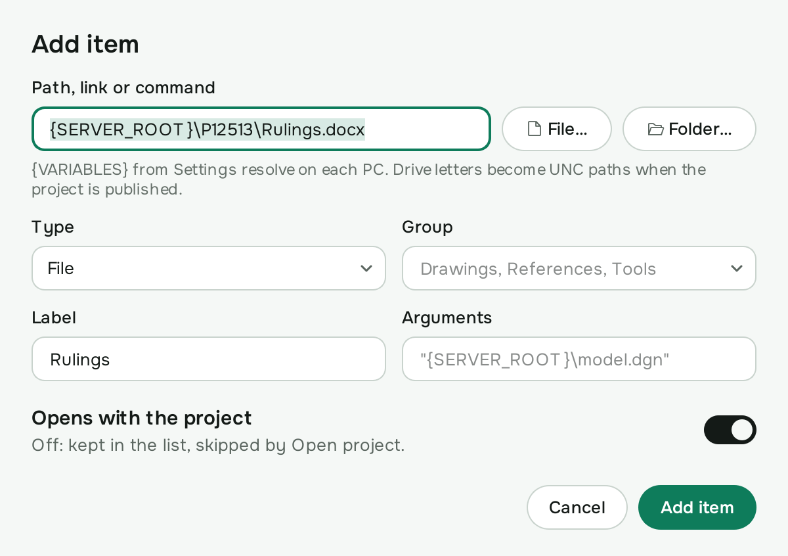
Fig. 7-2 Add item
Field
Notes
Path, link or command
Required. Anything Windows can open: a file or folder (Z:\Project\P12513\ISO), a UNC path (\\nas01\Project\…), a link (https://…, mailto:, Teams and OneNote links), an application (.exe, .bat, .cmd, .lnk, .msi), a path with a variable ({SERVER_ROOT}\P12513\Rulings.docx, section 10) or an environment variable (%USERPROFILE%\…), or a command: cmd: ipconfig or ps: Get-Date. The two buttons beside the box browse for a file or a folder.
Type
File, Folder, Link, Application, Command. Guessed from the path as you type a new item; check it. A web address typed without https:// is guessed as a file, so type the full address.
Label
A friendly name shown instead of the file name, for example Submission share.
Arguments
For applications only: what to pass on the command line, for example "{SERVER_ROOT}\model.dgn". Quote arguments that contain spaces.
Group
Items are listed under their group on the page: Drawings, References, Tools. Pick an existing group or type a new name; blank means ungrouped.
Opens with the project
On by default. Turn it off to keep an item in the project without opening it with Open project.
Add item (or Save) closes the dialog. An empty path is refused with the box outlined and the reason shown above the buttons.
7.3 The item row
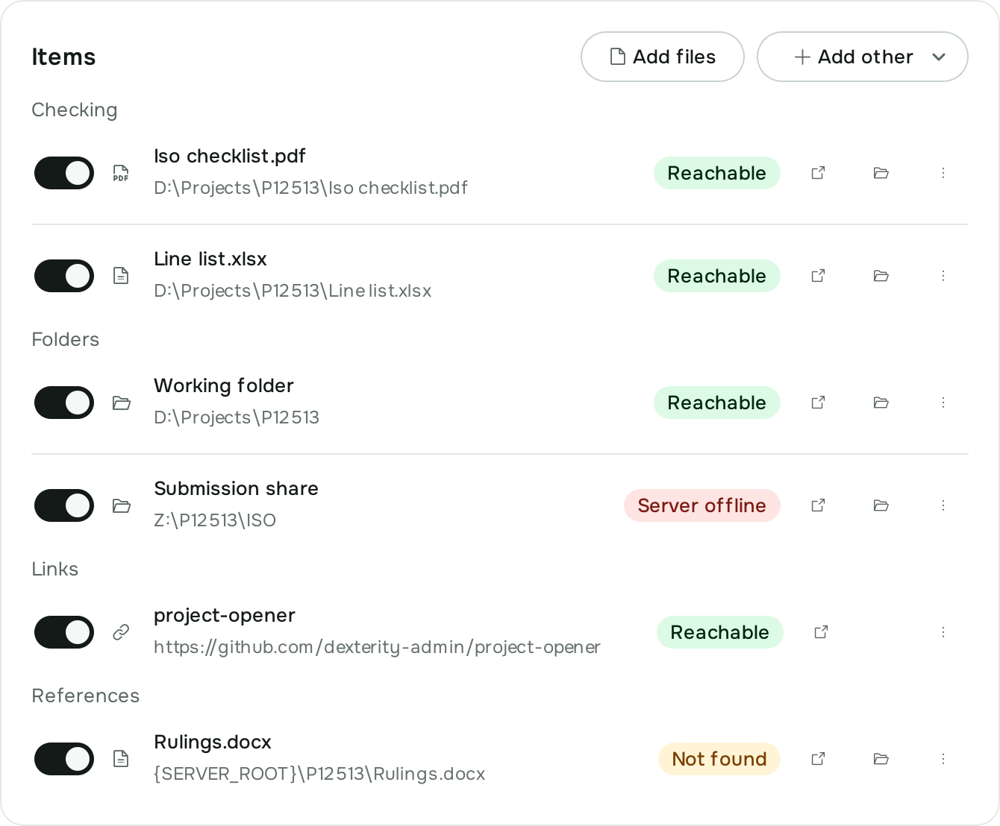
Fig. 7-3 Item rows with their status pills
Control
What it does
Switch
Enabled or not. Disabled items are dimmed and skipped by Open project, but still open from their own button and from any launch set that contains them.
Name and path
The label or file name, and the path. A UNC path is shown with your drive letter when one is mapped to it. Arguments are shown after the path.
Status pill
ReachableNot foundServer offlineUndefined variableChecking… — see section 10.1. Hover for the resolved path or the reason.
Open this item
Opens just this item. Double-clicking the row does the same.
Show in Explorer
Selects the file, or opens the folder, in Windows Explorer (files, folders and applications).
More (⋮)
Edit…, Copy path (copies the path exactly as stored, variables included), Open terminal here (a Windows Terminal or Command Prompt in the item's folder), Remove (asks first and says that the file itself is not touched; the item also leaves every launch set).
7.4 Notes
The Notes panel is a plain text box for contacts, conventions and reminders. It saves itself a moment after you stop typing. Notes are searched by the Projects search box and are kept when you update a project from the hub.
8 Launch sets
A launch set is a named subset of a project's items that opens together, in an order you choose: Checking (1 the iso checklist, 2 the line list), Submission pack (1 the working folder, 2 the submission share), Morning start. Think of it as the trade's checklist for one task.
On the project detail page, click + in the Launch sets panel. (The project needs at least one item first.)
Give the set a name and, if you like, an icon.
Tick the items that belong to it. Select all and Select none help with long lists; the dialog counts N of M items selected and refuses an empty set.
Put them in the order they should open with Move up and Move down. The numbers are the launch order; the sheet (section 9.1) shows the same numbers while it opens them.
Click Create launch set.
Each set is listed with its numbered steps (1 Iso checklist.pdf · 2 Line list.xlsx) and an Open button. The pencil edits it; the bin deletes it (the items stay in the project).
Launch sets are also offered on the project card (the layers icon), in the project menu (Open launch set ▸) and in the command palette, where typing the set's name finds it directly.
Switches do not apply to sets. A launch set opens exactly the items you ticked, whether or not their switch on the detail page is on. Use the switch for Open project; use sets for named jobs.
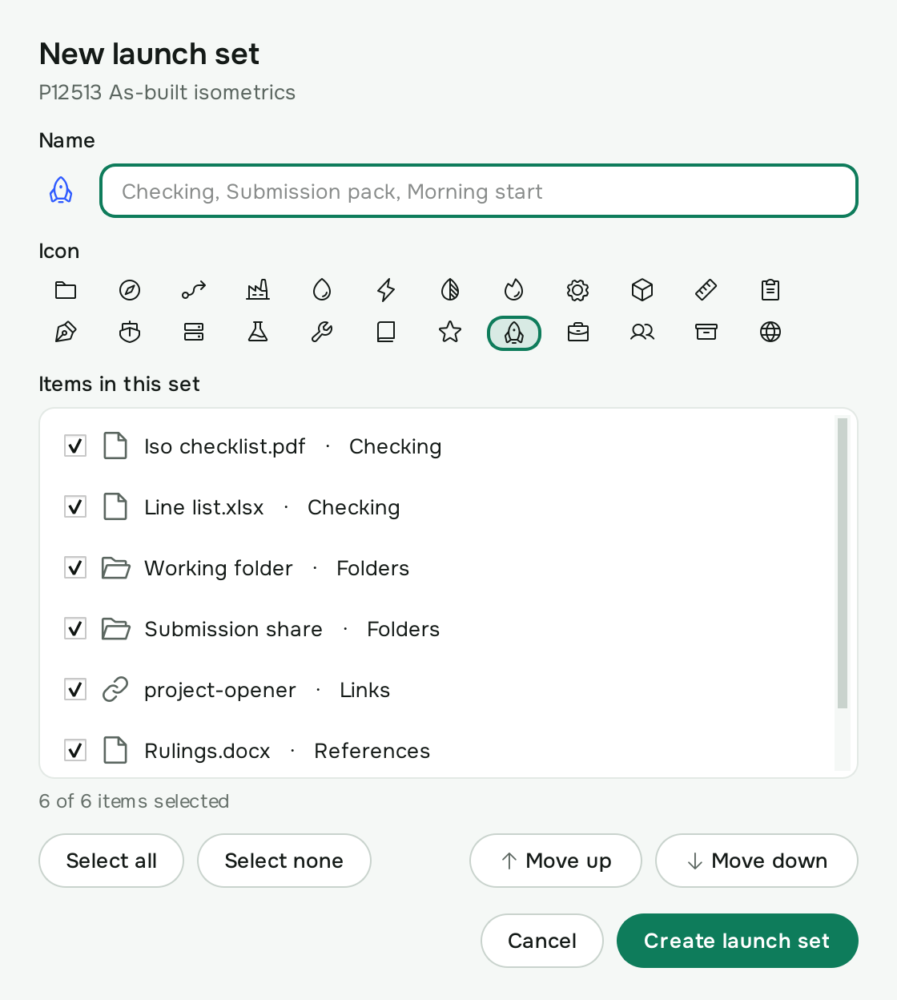
Fig. 8-1 New launch set
9 Opening a project
Six ways to open, all of them one action: Open on a card or row; Open project on the detail page; a launch set; a project in the tray menu; a projectopener://open/… link; and auto-launch at start-up.
9.1 The launch sheet
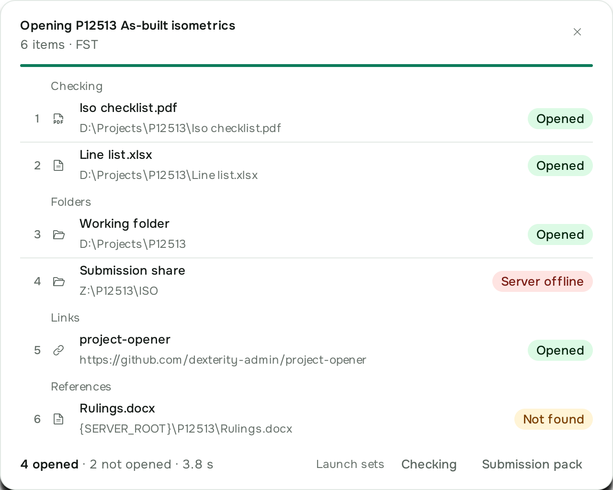
Fig. 9-1 The launch sheet after opening P12513: four items opened, one server offline, one file not found
The moment you open a project, a sheet appears over the page and shows what is happening, item by item:
Project Opener collects the enabled items (or the launch set's items, in the set's order) and resolves variables and drive letters for this PC (section 10.2). Each row is a numbered step under its group, with the item's icon, name and resolved path.
Items open one after another with a short pause between them (Settings → Behaviour → Pause between items, 350 ms by default) so that each application gets its window up. The row being tried reads Opening…; then its pill settles on Opened, Not found, Server offline, Undefined variable or Failed (hover a Failed pill for the reason). One dead path never stops the others.
The footer sums it up: 4 opened · 2 not opened · 2.8 s (skipped is used only for items that were switched off). On the right, the project's launch sets are offered as small buttons, so Checking is one more click away.
When every item opened, the sheet closes by itself after a moment. When anything did not, it stays until you press Esc or the ×, so nothing is missed. If the window is hidden (a tray launch), a Windows notification carries the summary instead.
If there are more than eight items (Confirm when opening more than, in Settings), Project Opener asks Open many items? first. Afterwards the project's Opened N× counter and last opened time are updated, the launch appears under Recent activity on Home, and, if you share your activity, colleagues see Vikram opened P12513 › Checking on the hub.
Item type
How it opens
File
With its default program, as a double-click in Explorer would.
Folder
In Windows Explorer.
Link
In your default browser, or in Teams, OneNote or your mail program for their link types.
Application
Started from its own folder with the arguments you gave. Without arguments it is opened through the Windows shell, so shortcuts and applications that ask for elevation behave as usual.
Command
cmd: runs in a Command Prompt window that stays open; ps: runs in a PowerShell window that stays open. Variables are substituted first.
9.2 Auto-launch at start-up
Tick Open at start-up in a project's menu or editor, and keep Settings → Behaviour → Open start-up projects on. About a second after Project Opener starts, those projects' enabled items open, and a toast lists them. Combine it with Start with Windows and your job is open before you have sat down.
9.3 Links that open a project
The installer registers the projectopener:// protocol. A link of the form projectopener://open/P12513 As-built isometrics (the project's exact name) opens that project's enabled items from a browser, a Teams message, an e-mail or a desktop shortcut. If Project Opener is already running, the running copy handles it.
10 Path health and portable paths
Paths are the data. Project Opener never guesses or rewrites one silently; it tests each one and tells you what it found.
10.1 The five states
Pill
Exact meaning
What to do
Reachable
The resolved path exists on this PC. Links and commands are never tested, so they always show Reachable: it does not mean the web page is up.
Nothing.
Not found
The path does not exist: the file was moved or renamed, the mapped drive is disconnected, or the server answers but the folder is gone.
Fix the path with Edit…, or reconnect the drive, then press F5.
Server offline
A UNC path whose server does not answer on the file-sharing port (445) within 0.8 s. The card's dot turns red.
Wait for the server, or check your network. Nothing to fix in the project.
Undefined variable
The path contains {NAME} and this PC has no value for it in Settings → Path variables.
Add the variable with the value for this PC (section 10.2).
Checking…
No result yet. Checks run in the background at start-up, after edits and launches, and on F5.
Wait a moment.
10.2 Portable paths: variables and mapped drives
Drive letters differ from PC to PC: Z: is \\nas01\Project on your desk and \\nas01\Project is P: on Priya's. Project Opener handles this in two ways, and the Drives on this PC block on Home (section 4) shows the result per root: one row for Z:, one for \\nas01, one for {SERVER_ROOT}.
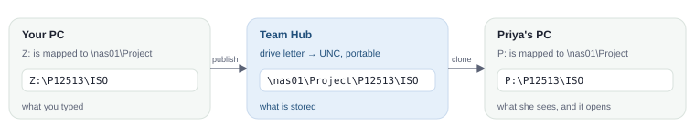
Fig. 10-1 One path, three PCs
Mapped-drive variables
Click Settings → Path variables → Add my mapped drives once on each PC. It adds a variable per network drive, for example {Z_DRIVE} = \\nas01\Project. When you publish or send a project, drive letters that are mapped to a network share are converted to their UNC form, so the project opens on every PC. When a project arrives with a drive letter this PC does not have, but a {X_DRIVE} variable says where that letter points, the letter is swapped automatically. On the detail page, UNC paths are shown with your drive letter.
Named variables
For anything else, use {NAME} in a path and give it a value per PC: {SERVER_ROOT}\P12513\Rulings.docx with {SERVER_ROOT} = \\nas01\Project here and D:\Mirror on the laptop. Names are upper case letters, digits and underscores; the editor normalises server root to {SERVER_ROOT}. Windows environment variables such as %USERPROFILE% work too.
Resolution order, before every test and every launch: 1) {VARIABLES} from Settings, 2) %ENV% variables, 3) a drive letter this PC lacks is swapped for its {X_DRIVE} share, 4) the path is normalised. A path with an undefined variable stops at step 1 and is reported as such; nothing is run.
11 The command palette
Press Ctrl + K anywhere, type three letters, press Enter.
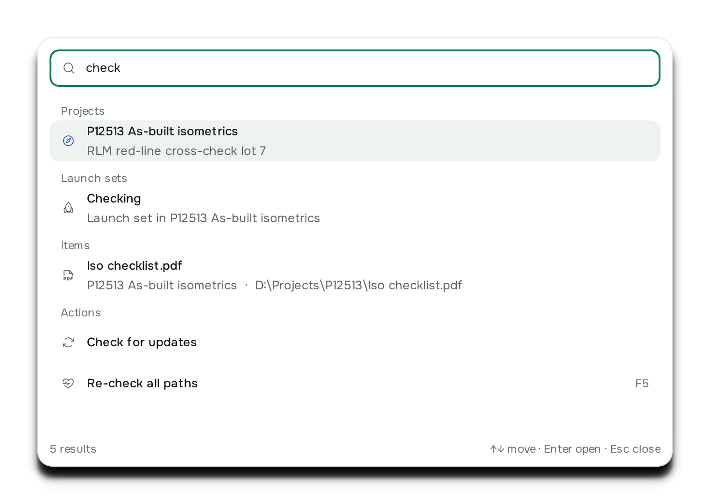
Fig. 11-1 The palette after typing a query
The palette searches four kinds of things and groups the results under Projects, Launch sets, Items and Actions:
Kind
Enter does
Project
Opens its detail page (it does not launch it; press Open project there).
Launch set
Opens that set at once.
Item
Opens that one item.
Action
Runs it: New project, Go to Projects, Go to Team Hub, Check for updates, Open Settings, Toggle dark / light theme, Re-check all paths.
With an empty box it lists your projects, pinned and recent first, then the actions with their shortcuts. When nothing matches, the footer says so. Matching is forgiving: a word start beats a substring, and the letters only need to appear in order, so sub pack finds Submission pack. Pinned projects rank higher.
↑↓ move, Enter opens, Esc closes. Ctrl + P is the same as Ctrl + K.
12 Team Hub
The Team Hub turns one shared folder into the team's notice board: who is online, what has been published, what is in your inbox, and what the team is doing. There is no server, no database and nothing to install on the file server.
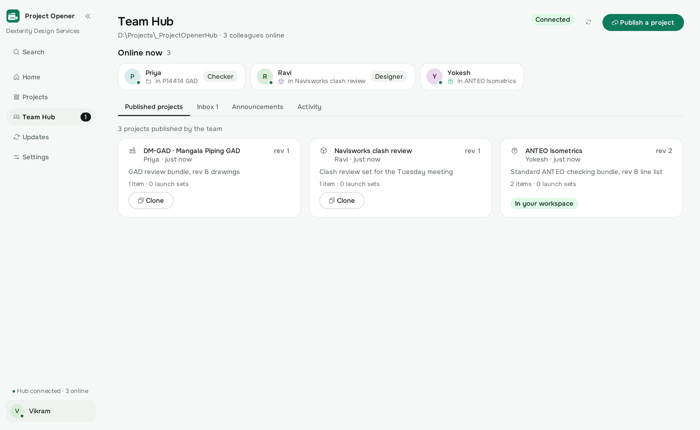
Fig. 12-1 Team Hub, Published projects tab
12.1 Setting it up
Your admin creates one folder that every colleague can read and write, for example \\nas01\Project\_ProjectOpenerHub. (Once per office.)
On each PC: Settings → Team Hub, paste the path or Browse… to it, click Connect. The sidebar status turns green (Hub connected · N online), and the Team Hub page shows the Connected pill with the folder and the online count under the title.
Also on each PC: Settings → Path variables → Add my mapped drives, so shared projects open regardless of drive letters.
Project Opener creates sub-folders in the hub (users, published, inbox, pulse, updates) and writes small files there. Every write is atomic, every reader tolerates a damaged file, and each person writes only their own files, so a plain network share is all the infrastructure there is.
12.2 Who is online
Online now (with the count beside it) shows a card per colleague: name, role, and either what they are working in, their PC and version, or when they were last seen. Someone is online if their heartbeat file is younger than three minutes; with Fast LAN presence on (the default), PCs on the same subnet also announce themselves every 15 seconds, so the status updates within seconds. Quitting Project Opener signs you off; hiding it to the tray does not.
12.3 Publishing, cloning and revisions
In a project's menu choose Publish to Team Hub… (or click Publish a project on the hub page and pick one).
Write the description the team will see, and click Publish. Drive letters become UNC paths; the project's pin and auto-launch are not published.
Colleagues see it under Published projects with your name and rev 1 in the card's corner. Clone gives them their own copy; the card then shows In your workspace.
When you change the project, publish again: the card says rev 2, Activity reads Vikram published P12513 · As-built isometrics rev 2 (was rev 1), and everyone who cloned it gets a toast New revision of … and a banner on the project (you have revision 1 · revision 2 available) with Update from hub.
Update from hub replaces the clone's items and launch sets with the new revision and keeps the colleague's own notes, colour, pin and settings. Items they added locally are lost, so it asks first. As the author you see Publish changes on your own project's page, and a bin icon on the hub card to Unpublish (colleagues keep their clones).
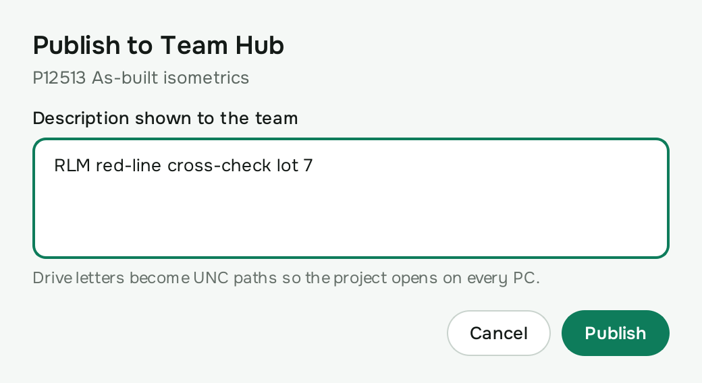
Fig. 12-2 Publish to Team Hub
One author per publication. Publishing a project you cloned from someone else overwrites their publication under your name. Duplicate it first and publish the copy if you want your own version.
12.4 Sending a project to a colleague
In the project menu choose Send to colleague…, pick the colleague's Windows user name under To (everyone who has used the hub is listed, online or not; any Windows user name can be typed), add a message, and click Send. Drive letters are converted so the project opens on their machine.
On their side a badge appears on Team Hub in the sidebar, Home shows 1 project waiting in your inbox, and a toast offers Open inbox. In the Inbox tab (its label carries the count) they Accept (the project is added to their workspace) or Dismiss (it is discarded; there is no undo).
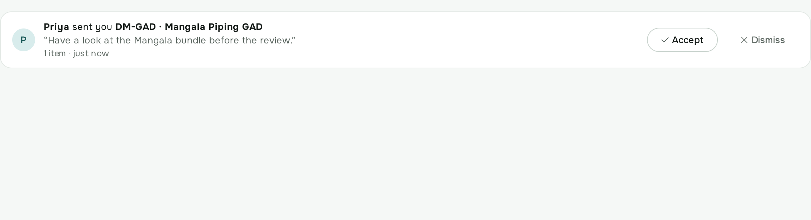
Fig. 12-3 Inbox
12.5 Announcements
Announcements → Post announcement puts a banner on everyone's Home page: a drive move, a template change, a deadline. Give it a Title and Details, a Level (Information, Warning, Critical) and Expires after in days (Never at 0). Only the author can remove an announcement; the hub keeps the newest fifty.
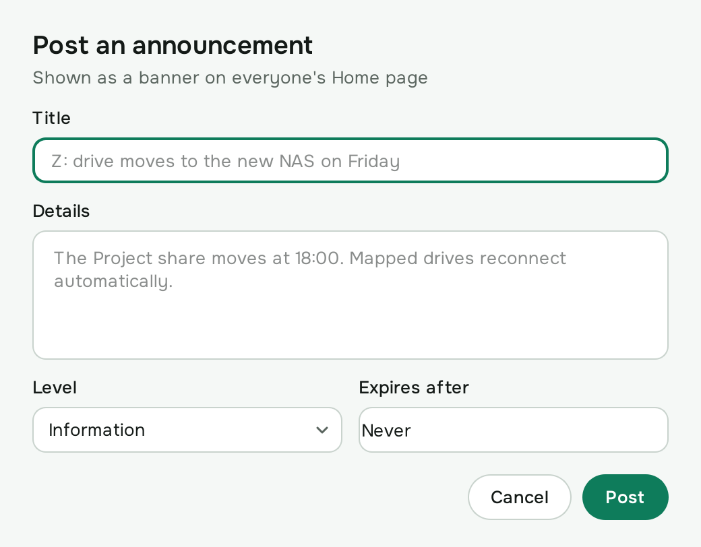
Fig. 12-4 Post an announcement
12.6 Activity and privacy
The Activity tab lists the newest forty events from the team: Yokesh opened P12513 › Checking, Priya published ANTEO Isometrics rev 2 (was rev 1), Ravi sent DM-GAD · Mangala Piping GAD → Vikram. Settings → Team Hub → Share my activity controls whether your launches and your current project are shared; publishing and sending are always listed because the recipients see them anyway. Turning sharing off keeps your online status but publishes nothing else.
13 Updates
Project Opener updates itself. You will usually only see a toast, Update 3.2.1 available · From LAN hub, and two clicks later you are on the new version.
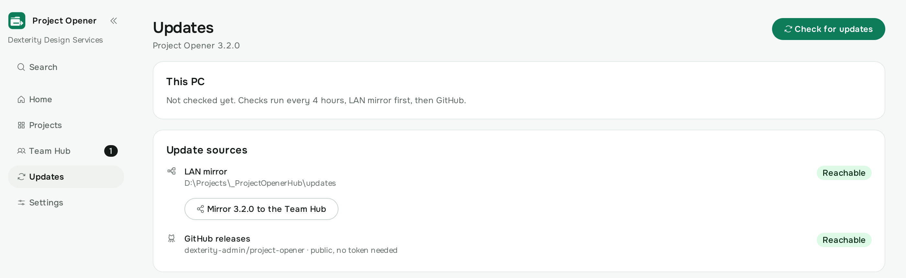
Fig. 13-1 Updates
13.1 How a check works
Eight seconds after start-up, then every four hours (and whenever you click Check for updates), the app reads the LAN mirror <hub>\updates\latest.json and asks GitHub Releases. The newer of the two wins. The This PC card always says in one sentence where you stand: You are on the latest version, 3.2.0, or what went wrong, with a Try again button.
When a newer version exists, the card shows Version X is available, where it came from and its size, the release notes, Download update and Skip this version.
Download update fetches the installer into %APPDATA%\DexterityDesign\ProjectOpener\downloads\ and checks its SHA-256 against the manifest. A mismatch deletes the file and reports an error; a release without a checksum is installed but the toast says it was not verified.
Install and restart runs the installer silently, closes Project Opener and starts the new version. Your projects and settings are untouched.
13.2 Updating the whole office from the LAN (admins)
After downloading an update from GitHub, an admin clicks Mirror 3.2.1 to the Team Hub (the button names the version it will copy). The installer and a fresh manifest are copied into <hub>\updates\, and every other PC picks the update up from the LAN at its next check, with no internet access needed. Mirror 3.2.0 to the Team Hub under Update sources does the same for the version you are already running. The hub keeps only the two newest installers.
13.3 Other controls
Control
What it does
Skip this version / Offer it again
Stops the reminders for that one version. A newer one is offered again. Settings → Updates → Clear does the same.
Update sources
Shows the LAN mirror folder and the GitHub repository, each with a Reachable or Not set pill.
Diagnostics
The data folder, the executable, your PC and user name, the last lines of the log, and buttons to Open data folder, Open log and Show in folder. Quote the version and attach the log when you report a problem.
Manual fallback. Download ProjectOpener-Setup-X.Y.Z.exe from the hub's updates\ folder or the release page, and run it. Settings and the workspace are kept.
14 Settings
Every setting applies immediately; there is no Save button. Text boxes apply when you leave them or press Enter.
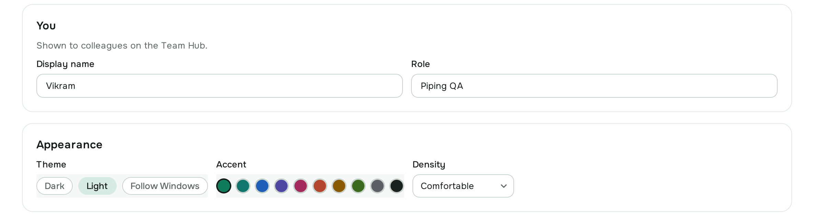
Fig. 14-1 You, Appearance
14.1 You
Display name (your Windows user name if blank) and Role (shown as a pill by your name). Both are shown to colleagues on the Team Hub.
14.2 Appearance
Theme: Dark, Light or Follow Windows, which switches live with Windows. Accent: ten colours, Aurora green by default (switches that are on show in ink, not in the accent, so colour stays reserved for projects and path health). Density: Comfortable or Compact, which tightens cards and rows to fit more on a laptop screen.
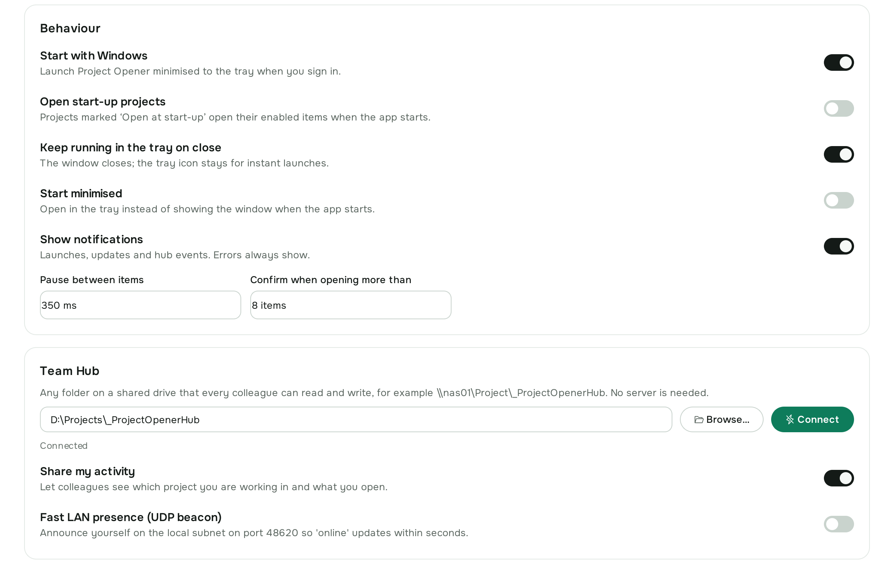
Fig. 14-2 Behaviour, Team Hub
14.3 Behaviour
Setting
Default
Start with Windows starts the app minimised to the tray when you sign in.
Off
Open start-up projects: projects marked Open at start-up open when the app starts (section 9.2).
On
Keep running in the tray on close: the × closes the window; the tray icon stays.
On
Start minimised: start in the tray without showing the window.
Off
Show notifications: toasts for launches, updates and hub events (errors always show).
On
Pause between items when a project opens.
350 ms
Confirm when opening more than N items (0 = never ask).
8
14.4 Team Hub
The hub folder with Browse… and Connect (section 12.1); a status line says whether it is reachable. Clear the path and click Connect to disconnect. Share my activity (section 12.6). Fast LAN presence (UDP beacon) announces you on the subnet on port 48620 so online updates within seconds; the hub heartbeat remains the source of truth if the firewall blocks it.
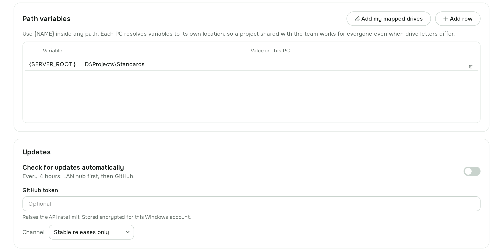
Fig. 14-3 Path variables, Updates, Data and backups
14.5 Path variables
Add my mapped drives creates a {X_DRIVE} variable per network drive. Add row adds a variable of your own: a Variable name and its Value on this PC. The bin removes a row. Section 10.2 explains how they are used.
14.6 Updates
Check for updates automatically (every four hours). Skipped version with Clear. An optional GitHub token, saved as soon as you leave the box and stored encrypted for your Windows account; it only raises the API rate limit, and most colleagues never need one. Channel: Stable releases only or Include pre-releases.
14.7 Data and backups
The workspace file's location, Export workspace…, Import…, Import from Project Opener 1.x, Restore a backup… and Open backups folder. Section 15 covers each.
15 Your data, backups, export and import
Location
Contents
%APPDATA%\DexterityDesign\ProjectOpener\
workspace.json (all projects), settings.json, history.jsonl (launch log), backups\ (the 30 newest copies of the workspace, one before every save), logs\project-opener.log, downloads\ (update installers).
%LOCALAPPDATA%\Programs\Project Opener\
The program itself. No user data lives here, so reinstalling or updating never loses projects.
The Team Hub folder
Shared files (section 12.1). Your own are users\<you>.json, pulse\<you>.jsonl, and the projects you published or sent.
Every change is saved immediately, and every file is written to a temporary name first and then renamed, so a crash or a power cut cannot leave a half-written workspace. If the workspace file is ever unreadable, the newest good backup is loaded automatically and the damaged file is kept beside it as workspace.corrupt.json.
Action (Settings → Data and backups)
What it does
Export workspace…
Writes every project to one JSON file (by default in Documents). Use it to move to a new PC or to keep an archive.
Import…
Reads a Project Opener 3 export, a single exported project, a 1.x backup or a 2.x hub file. For 3.x and 1.x files it asks Merge (projects with the same name or id are replaced by the imported copy, the rest are added) or Replace everything (your current workspace is emptied first, after a backup).
Import from Project Opener 1.x
Re-reads the 1.x data on this PC and merges it.
Restore a backup…
Lists the backups, newest first, and replaces the workspace with the one you choose, after confirmation. The current workspace is backed up first, so a restore can itself be undone.
Open backups folder
Opens the folder in Explorer, for copying a backup elsewhere.
Backups are per save, not per day. Thirty backups can span a single busy hour. For a point-in-time archive, use Export workspace… and keep the file.
16 Keyboard shortcuts
Anywhere in the window
Command palette
Ctrl + K or Ctrl + P
New project
Ctrl + N
Find a project (Projects page, search box focused)
Ctrl + F
Home
Ctrl + 1
Projects
Ctrl + 2
Team Hub
Ctrl + 3
Settings
Ctrl + ,
Collapse or expand the sidebar
Ctrl + B
Re-check all paths
F5
Back to the previous page
Alt + ←
In the command palette
Move the selection
↑↓
Open the selected result
Enter
Close
Esc
In dialogs
Confirm (the filled button; never a delete)
Enter
Cancel
Esc
Close the launch sheet
Esc
Add a tag (project editor)
Enter in the tag box
Mouse
Open a project's detail page
Click the card
Open one item
Double-click its row
Create a project from files
Drop them on Projects
Add items
Drop them on the detail page
17 Troubleshooting and support
Symptom
Cause and what to do
An item shows Not found but the file is there
The path was typed for another PC's drive letter, or your mapped drive is disconnected. Open the item's Edit…, check the path, reconnect the drive, press F5. For shared projects, run Add my mapped drives once.
Undefined variable
Add the variable in Settings → Path variables with its value for this PC (section 10.2).
Server offline on everything
The server is down or you are off the office network. Nothing to change in the project. Links and local files still open.
"Open project" opens nothing: Nothing to open
Every item's switch is off, or the project has no items. Turn switches on, or use a launch set.
A web address opens as a file
It was saved with type File because it had no https://. Edit the item and set the type to Link.
Colleagues cannot see me online
Check Settings → Team Hub shows Connected and that you are using the same folder. Presence refreshes within three minutes without the UDP beacon; with it, within seconds unless Windows Firewall blocks UDP port 48620.
Hub folder not writable / Publish failed
Ask your admin for write access to the hub folder. Reading works without it, but publishing, sending and announcements do not.
The sidebar says Hub unreachable
The hub folder cannot be reached right now. Work continues locally; the hub reconnects by itself when the share is back.
Update check says GitHub answered HTTP 403
No internet, or the API rate limit was hit. The LAN mirror still works; ask an admin to mirror the update, or add a read-only token in Settings → Updates.
Nothing happens when I click a projectopener:// link
The protocol is registered by the installer, not by the portable zip. Run the installer once. Check the project name in the link is exact.
Closing the window does not quit
By design: it hides to the tray. Right-click the tray icon → Quit, or turn off Keep running in the tray on close.
Project Opener hit a problem
The crash dialog shows the details. Your workspace is safe (it is saved after every change). Send the details and the log (Updates → Open log) to the admin.
I deleted a project by mistake
Settings → Data and backups → Restore a backup… and choose the backup from just before the deletion. The files on disk were never touched.
Support
Report problems to the Office of the Managing Director by e-mail or Zoho Cliq with: the version (Updates page), what you clicked, what you expected, and the log file. Suggestions for the next version are welcome the same way. The source, release notes and installers are at github.com/dexterity-admin/project-opener, and the download page is dexterity-admin.github.io/project-opener.